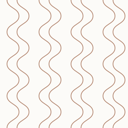
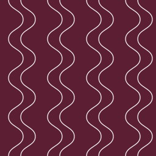
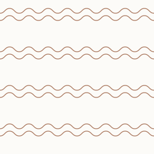
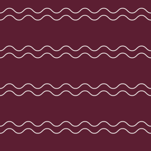
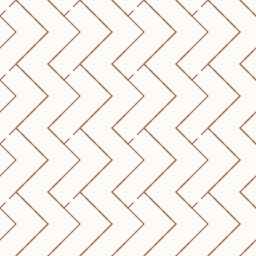
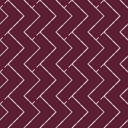
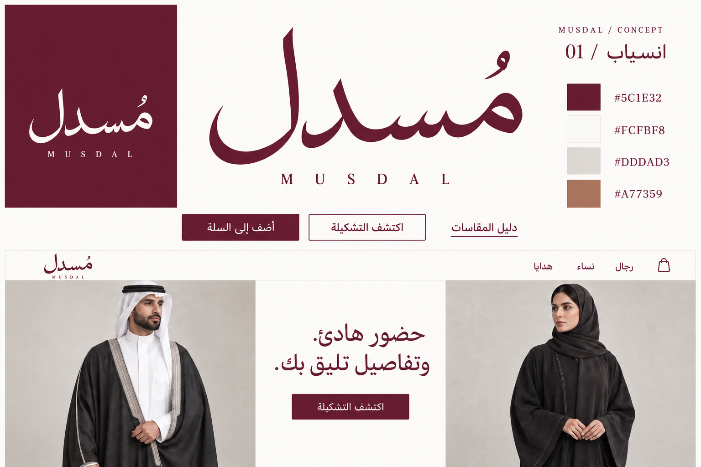

01 / الأساسيةنفس اللام · نفس النسب
بورغندي على أرضية فاتحة
النسخة الأساسية للموقع، الكروت والورق الفاتح.
16px32px48px
انسياب · البورغندي والأوف وايت · 04 / 10 / 2026
لام بساق أطول تتبع ارتفاع الحرف وزاوية اتصاله بالصحن في لوغو «انسياب». نفس الشكل يُستخدم بورغندي على الأرضية الفاتحة، أو أوف وايت على البورغندي.
#5C1E32أوف وايت#FCFBF8حجري فاتح#DDDAD3نحاسي#A77359لوغو «انسياب» يبقى كما اعتمدناه. اللام الطويلة هي خيارك الحالي. يختلف اللون حسب الأرضية؛ شكل الحرف ونسبه ثابتان.
ساق طويلة ورأس مائل، مع زاوية واضحة عند الصحن. نعرض النسختين بالحجم نفسه، ومعهما معاينات أيقونة الموقع.
النسخة الأساسية للموقع، الكروت والورق الفاتح.
النسخة المعكوسة للتغليف والمساحات البورغندية.
على الأرضية الفاتحة نستخدم البورغندي #5C1E32؛ وعلى الأرضية البورغندية نستخدم الأوف وايت #FCFBF8. نترك مساحة حول اللام، ونحافظ على ساقها الطويلة وزاوية اتصالها بالصحن عند تغيير الحجم.
للموقع تكرار حجري خفيف على الأوف وايت. وللتغليف نحاسي محدود، أو أوف وايت على البورغندي.
خطوط متوازية تنثني وتعود، بإيقاع رأسي منتظم.



للموقع: فواصل الأقسام والمساحات الجانبية؛ اللون الحجري على الأوف وايت.
للتغليف: داخل الصندوق وورق التغليف؛ نحاسي محدود أو أوف وايت على البورغندي.
مسار أفقي مزدوج مستوحى من حافة القطعة وتشطيبها.



للموقع: شريط فصل قصير أو أسفل قسم الهدايا.
للتغليف: حافة الصندوق، الشريط الورقي والكرت؛ لا يُغطّي اسم مُسدل.
وحدات هندسية بسيطة تتداخل بتكرار واضح وغير مزخرف.



للموقع: مساحة محدودة بحدة منخفضة؛ خلفيات المحتوى والمنتجات تبقى سادة.
للتغليف: ظهر الكرت أو الورق الداخلي، بتكرار أوسع من النقوش التقليدية.
جرّب لونَي اللام مع الباترن على التغليف؛ زرّا النسختين بالأعلى يغيّران الأرضية تلقائيًا.
تكرار واسع للرمز على الورق الداخلي أو ظهر الكرت. يبقى مختلفًا عن الباترن الخطي، ويظهر فقط بعد اختيار خيار للمعاينة.
اللام الطويلة المختارة.
المعاينات رسومات لتطبيق الهوية. اسم مُسدل هنا نص للواجهة؛ الرسم الأصلي للوغو محفوظ في المرجع المعتمد.
بحث في أنظمة علامات معاصرة، ووحدات التكرار الهندسية، ومتطلبات أيقونة الموقع.
رمز مستقل مرن في الأحجام والاستخدامات، ومنه باترن متكرر ضمن نظام متماسك.
استنتاجنا للتصميم: لمُسدل: نبدأ بصورة ظلية بسيطة، ونختبر الرمز مستقلاً وبحجم صغير قبل توسيعه إلى باترن.
الأناجرام في تاريخ الدار مرتبط بالاسم وبأداة وسم الجلد.
استنتاجنا للتصميم: لمُسدل: مرجعنا الخاص هو حروف الاسم وانسدال القماش؛ الأشكال هنا أصلية وليست اقتباسًا لأناجرام الدار.
تتكون كثير من الأنماط الهندسية من وحدات بسيطة تُكرر وتُركب.
استنتاجنا للتصميم: لمُسدل: نستخدم التكرار والهندسة باقتصاد، ونبتعد عن الزهور والنقوش المزدحمة. لا ننسب باترناتنا إلى تقليد محلي محدد.
الأيقونة مربعة وممثلة للعلامة؛ توصي الوثيقة بمصدر أكبر من 48 بكسل.
استنتاجنا للتصميم: نعاين 16 و32 و48 بكسل فعلياً، ونجهز نسخ 64 و192 بكسل، مع مساحة آمنة وفراغات واضحة.

حزمة البراند تضم اللوغو العربي والإنجليزي واللام والفافيكون والألوان وأربع عائلات باترن، كمسارات وأشكال SVG فعلية. حروف اللوغو مسارات مستقلة عن الخطوط؛ لا توجد صور نقطية مدمجة في الحزمة. أُعيد بناء الرسومات المتجهية من المراجع المعتمدة مع الحفاظ على شكلها ونسبها. الخيارات السابقة محفوظة للمقارنة.
تنزيل سجل الخيارات والأصول والمصادر JSON ↓